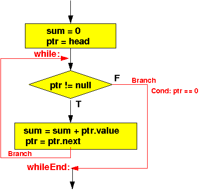

- Recall that a
linked list is
chained togeher using
references (= addresses)
- Example: a list with 3 nodes
Memory: +---------------+ head: | 8000 |-------------------------------+ +---------------+ | | | | ....... | ....... | +---------------+ | 8000 | data1 | Linked list element 1 <-----+ +---------------+ | next=10000 |-------------------------------------+ +---------------+ | | | | +---------------+ | ....... | ....... | +---------------+ | 9000 | data3 | Linked list element 3 <----+ | +---------------+ | | | next=0 (null) | | | +---------------+ | | ....... | | ....... | | +---------------+ | | 10000 | data2 | Linked list element 2 | <-----+ +---------------+ | | next=9000 |-----------------------------+ +---------------+
- We use the following Node class definition in the
examples:
public class Node // Linked list element { int value; // 4 bytes Node next; // 4 bytes }You will need to adjust the offsets for different node structures
The underlying technique on how to traverse the list will remain unchange
-
Suppose a linked list has been
constructed; we just need to
traverse the linked list.
The list starts at the location given by the variable head:
Node head;
- The Java code to
find the sum
stored in all elements of the list:
int sum; Node ptr; sum = 0; ptr = head; // We assume the list is given while ( ptr != null ) { sum = sum + ptr.value; ptr = ptr.next; }The flow chart of the above program is:
 Note:
- The variable ptr
in the high level programming language
is a help variable needed
to traverse the
linked list
In assembler programming, the assembler programmer can use registers as help variables !!!
I will therefore use register r10 as the ptr variable !!!
ARM assembler code that implements this program control flow is:
main: // sum = 0; - always execute the RHS first !!! mov r0, #0 // r0 = 0 - ready to save it movw r1, #:lower16:sum movt r1, #:upper16:sum // r1 = addr(sum) str r0, [r1] // sum = 0; // ptr(r10) = head; movw r0, #:lower16:head movt r0, #:upper16:head // r0 = addr(head) ldr r10, [r0] // r10 = head while: // START of while loop // Test while condition ptr (r10) != null cmp r10, #0 // Check: ptr (r10) != null beq whileEnd // If ptr(r10) == null: exit while loop /* *********************************** While body *********************************** */ // sum = sum + ptr(r10).value //// Get sum movw r0, #:lower16:sum movt r0, #:upper16:sum // r0 = addr(sum) ldr r1, [r0] // r1 = sum; //// Get ptr(r10).value (use base + offset !) ldr r2, [r10, #0] // r2 = ptr(r10).value //// compute sum + ptr(r10).value add r1, r1, r2 // r1 = sum + ptr(r10).value //// Store result in sum (in memory) movw r0, #:lower16:sum movt r0, #:upper16:sum // r0 = addr(sum) str r1, [r0] // sum = sum + ptr(r10).value // ptr = ptr.next ldr r10, [r10, #4] // ptr(r10) = ptr(r10).next // End of while body --- branch back to test !! b while whileEnd: /* -------------------------------------------------- Begin of the permanent program variables -------------------------------------------------- */ .data sum: .skip 4 head: .4byte p0 // head contains the address of the first list elem // head->[34]->[-9]->[99]->[78]->[55] // list structure is: [int value, next] p0: .4byte 34, p3 // p0 contains [34, p3] p1: .4byte 59, p2 // p1 contains [99, p2] p2: .4byte 66, p4 // p2 contains [78, p2] p3: .4byte -9, p1 // p3 contains [-9, p2] p4: .4byte 50, 0 // p4 contains [55, p2] .end
- The variable ptr
in the high level programming language
is a help variable needed
to traverse the
linked list
- Example Program:
(Demo above code)

- Prog file: /home/cs255001/demo/asm/7-while/sum-list.s
How to run the program:
- To compile: as255 sum-list
- To run: use EGTAPI
- The Java code to
find the maximum
of the values stored in a
non-emply list:
// Assume we have a NON-empty lsit !!! max = head.value; // first value in linked list ptr = head.next; // ptr starts at 2nd list elem while ( ptr != null ) { if ( ptr.value > max ) max = ptr.value; ptr = ptr.next; }The flow chart of the above program is:

In M68000 assembler code:
main: // max = head.value; - always execute the RHS first !!! // Step 1: Get the LHS value (into a register) movw r0, #:lower16:head movt r0, #:upper16:head // r0 = addr(head) ldr r0, [r0] // r0 = head ldr r0, [r0] // r0 = head.value // Step 2: Store value into RHS (max) movw r1, #:lower16:max movt r1, #:upper16:max // r1 = addr(max) str r0, [r1] // max = head.value; // ptr(r10) = head.next; // Step 1: Get the LHS value (into a register) movw r0, #:lower16:head movt r0, #:upper16:head // r1 = addr(head) ldr r0, [r0] // r0 = head ldr r10,[r0, #4] // r10 = head.next // Step 2: Store value into RHS (r10), is already done while: // START of while loop // Test while condition ptr (r10) != null cmp r10, #0 // Check: ptr (r10) != null beq whileEnd // If ptr(r10) == null: exit while loop /* *********************************** While body *********************************** */ // if ( ptr(r10).value > max ) //// Get ptr(r10).value (use base + offset access technique !) ldr r0, [r10, #0] // r0 = ptr(r10).value //// Get max movw r1, #:lower16:max movt r1, #:upper16:max // r1 = addr(max) ldr r2, [r1] // r2 = max; //// Compare ptr(r10).value (= r0) < max (= r2) cmp r0, r2 ble ifEnd /* ******************************************** Then-part: max = ptr(r10).value Note: r1 = addr(max), r0 = ptr(r10).value ******************************************** */ str r0, [r1] // max = ptr(r10).value ifEnd: // ptr(r10) = ptr(r10).next ldr r10, [r10, #4] // ptr(r10) = ptr(r10).next // End of while body --- branch back to test !! b while whileEnd: /* -------------------------------------------------- Begin of the permanent program variables -------------------------------------------------- */ .data max: .skip 4 head: .4byte p0 // head contains the address of the first list elem // head->[34]->[-9]->[99]->[78]->[55] // list structure is: [int value, next] p0: .4byte 34, p3 // p0 contains [34, p3] p1: .4byte 59, p2 // p1 contains [99, p2] p2: .4byte 66, p4 // p2 contains [78, p4] p3: .4byte -9, p1 // p3 contains [-9, p1] p4: .4byte 50, 0 // p4 contains [55, null] .end
- Example Program:
(Demo above code)
- Prog file: /home/cs255001/demo/asm/7-while/max-list.s
How to run the program:
- To compile: as255 max-list
- To run: use EGTAPI